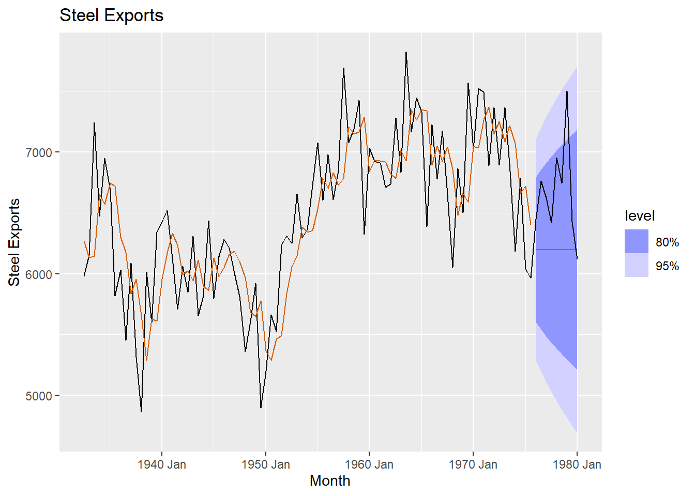

Chapter 3 Exponential Smoothing
We will now get into our first modeling, which are exponential smoothing models. They have been around for quite some time, but can still be useful if interested in one-step ahead forecasting.
In R, we are able to do Simple (or Single) Exponential Smoothing Models, Holt Exponential Smoothing Models and Holt-Winters Exponential Smoothing Models. We will be using the Steel data set and the airline data set to illustrate these models. Each of these are shown below.
3.1 Simple Exponential Smoothing
For Simple Exponential Smoothing Models (SES), we have only one component, referred to as the level component. \[\hat{Y}_{t+1}= L_{t}\\ L_{t} = \alpha Y_{t} + (1-\alpha)L_{t-1}\]
This is basically a weighted average with the last observation and the last predicted value. Since this only has a level component, forecasts from SES models will be a horizontal line (hence why this method is called “one-step ahead” forecasting).
Before modeling, be sure to divide your data into a training, validation and test (or at least training and test). The below code illustrates the Simple (Single) Exponential Smoothing Model.
# Building a Single Exponential Smoothing (SES) Model - Steel Data #
Steel <- Steel |> mutate(date = seq(ymd('1932-07-01'),ymd('1980-01-01'),by='6 months'))
steel_ts<-Steel |> mutate(Month=yearmonth(date)) |> as_tsibble(index=Month)
steel_train <-steel_ts |> filter(year(date) <= 1975)
SES.Steel <- steel_train |>
model(ETS(steelshp ~ error("A") + trend("N") + season("N")))
Steel.for <- SES.Steel |>
fabletools::forecast(h = 9)
report(SES.Steel)## Series: steelshp
## Model: ETS(A,N,N)
## Smoothing parameters:
## alpha = 0.466543
##
## Initial states:
## l[0]
## 6269.498
##
## sigma^2: 214894.3
##
## AIC AICc BIC
## 1460.688 1460.977 1468.086# Plot the SES model on steel data
Steel.for |>
autoplot(steel_ts) +
geom_line(aes(y = .fitted), col="#D55E00",
data = augment(SES.Steel)) +
labs(y="Steel Exports", title="Steel Exports") +
guides(colour = "none")
# To get fitted values for training data set:
Steel_fitted <-fitted(SES.Steel)$.fitted
# To get fitted values for test data set:
Steel_test <- Steel.for$.mean
# Computes accuracy statistics for SES model on steel data (test data)
fabletools::accuracy(Steel.for, steel_ts)## # A tibble: 1 × 10
## .model .type ME RMSE MAE MPE MAPE MASE RMSSE ACF1
## <chr> <chr> <dbl> <dbl> <dbl> <dbl> <dbl> <dbl> <dbl> <dbl>
## 1 "ETS(steelshp ~ error(\"A\") + trend(\"N\")… Test 468. 599. 486. 6.75 7.04 1.17 1.13 -0.05003.2 Holt ESM
The Holt model incorporates trend information. So, now there are two components: level and trend. For each component, there will be a smoothing coefficient (or weight). CAREFUL, when you look at parameter estimates, these are NOT the estimates for the mean nor the linear trend…you should be thinking of them as weights (between 0 and 1). The overall form for Holt’s method is:
\[\hat{Y}_{t+h}= L_{t}+hT_{t}\\ L_{t} = \alpha Y_{t} + (1-\alpha)(L_{t-1}+T_{t-1})\\ T_{t} = \beta (L_{t}-L_{t-1}) + (1-\beta) T_{t-1}\]
For the Holt’s method, when you forecast, you will see a trending line.
# Building a Linear Exponential Smoothing Model - US Airlines Data #
USAirlines_ts <- USAirlines |> mutate(date=myd(paste(Month, Year, "1"))) |> mutate(Month2=yearmonth(date)) |> as_tsibble(index=Month2)
air_train <-USAirlines_ts |> filter(year(date) <= 2005)
LES.air <- air_train |>
model(ETS(Passengers ~ error("A") + trend("A") + season("N")))
air.for <- LES.air |>
fabletools::forecast(h = 27)
report(LES.air)## Series: Passengers
## Model: ETS(A,A,N)
## Smoothing parameters:
## alpha = 0.5860139
## beta = 0.003740218
##
## Initial states:
## l[0] b[0]
## 37303.09 526.6595
##
## sigma^2: 23188824
##
## AIC AICc BIC
## 4271.560 4271.882 4287.847# Plot the data
air.for |>
autoplot(USAirlines_ts) +
geom_line(aes(y = .fitted), col="#D55E00",
data = augment(LES.air)) +
labs(y="Passengers", title="US Airline Passengers") +
guides(colour = "none")We can also perform Holt’s method with a damped trend. You will see the formula for the damped trend is similar to the previous Holt formula with an addition of a dampening parameter.
\[\hat{Y}_{t+h}= L_{t}+\sum_{i}^{k}\phi^{i}T_{t}\\ L_{t} = \alpha Y_{t} + (1-\alpha)(L_{t-1}+\phi T_{t-1})\\ T_{t} = \beta (L_{t}-L_{t-1}) + (1-\beta) \phi T_{t-1}\]
We will illustrate the damped trend on the Airline data set.
LdES.air <- air_train |>
model(ETS(Passengers ~ error("A") + trend("Ad") + season("N")))
air.for <- LdES.air |>
fabletools::forecast(h = 27)
report(LdES.air)## Series: Passengers
## Model: ETS(A,Ad,N)
## Smoothing parameters:
## alpha = 0.5705768
## beta = 0.0001003564
## phi = 0.8085131
##
## Initial states:
## l[0] b[0]
## 36885.52 526.5046
##
## sigma^2: 23007825
##
## AIC AICc BIC
## 4271.031 4271.485 4290.576# Plot the data
air.for |>
autoplot(USAirlines_ts) +
geom_line(aes(y = .fitted), col="#D55E00",
data = augment(LdES.air)) +
labs(y="Passengers", title="US Airline Passengers") +
guides(colour = "none")
3.3 Holt-Winters
The Holt-Winters (HW) model has three components to it (level, trend and seasonality). Seasonality is an interesting component to model since we can have an additive seasonal component or a multiplicative seasonal component. Both models are shown below:
Additive HW \[\hat{Y}_{t+h}= L_{t}+hT_{t} + S_{t-p+h}\\ L_{t} = \alpha (Y_{t} - S_{t-p}) + (1-\alpha)(L_{t-1}+T_{t-1})\\ T_{t} = \beta (L_{t}-L_{t-1}) + (1-\beta) T_{t-1}\\ S_{t} = \gamma (Y_{t}-L_{t-1}-T_{t-1}) + (1-\gamma) S_{t-p}\]
Multiplicative HW \[\hat{Y}_{t+h}= (L_{t}+hT_{t}) S_{t-p+h}\\ L_{t} = \alpha \frac{Y_{t}} {S_{t-p}} + (1-\alpha)(L_{t-1}+T_{t-1})\\ T_{t} = \beta (L_{t}-L_{t-1}) + (1-\beta) T_{t-1}\\ S_{t} = \gamma \frac{Y_{t}}{L_{t-1}+T_{t-1}} + (1-\gamma) S_{t-p}\]
Where p is the frequency of the seasonality (i.e. how many “seasons” there are within one year).
# Building a Holt-Winters ESM - US Airlines Data - Additive Seasonality
HWadd.air <- air_train |>
model(ETS(Passengers ~ error("A") + trend("A") + season("A")))
air.for <- HWadd.air |>
fabletools::forecast(h = 27)
report(HWadd.air)## Series: Passengers
## Model: ETS(A,A,A)
## Smoothing parameters:
## alpha = 0.5913618
## beta = 0.0001002723
## gamma = 0.0001000455
##
## Initial states:
## l[0] b[0] s[0] s[-1] s[-2] s[-3] s[-4] s[-5] s[-6] s[-7] s[-8]
## 38409 159.5944 -1520.744 -2728.928 -117.3477 -4305.732 6420.735 6299.852 4002.381 1210.882 122.2352
## s[-9] s[-10] s[-11]
## 2660.169 -6471.051 -5572.452
##
## sigma^2: 4099578
##
## AIC AICc BIC
## 3950.201 3953.718 4005.578# Plot the data
air.for |>
autoplot(USAirlines_ts) +
geom_line(aes(y = .fitted), col="#D55E00",
data = augment(HWadd.air)) +
labs(y="Passengers", title="US Airline Passengers") +
guides(colour = "none")
### Multiplicative model
HWmult.air <- air_train |>
model(ETS(Passengers ~ error("M") + trend("A") + season("M")))
air.for <- HWmult.air |>
fabletools::forecast(h = 27)
report(HWmult.air)## Series: Passengers
## Model: ETS(M,A,M)
## Smoothing parameters:
## alpha = 0.5132388
## beta = 0.006772624
## gamma = 0.0614166
##
## Initial states:
## l[0] b[0] s[0] s[-1] s[-2] s[-3] s[-4] s[-5] s[-6] s[-7]
## 38328.12 132.2916 0.9879613 0.9516784 1.015964 0.9248462 1.127338 1.111153 1.063682 1.012367
## s[-8] s[-9] s[-10] s[-11]
## 0.9931891 1.041972 0.8832477 0.8866022
##
## sigma^2: 0.0015
##
## AIC AICc BIC
## 3922.549 3926.066 3977.926# Plot the data
air.for |>
autoplot(USAirlines_ts) +
geom_line(aes(y = .fitted), col="#D55E00",
data = augment(HWmult.air)) +
labs(y="Passengers", title="US Airline Passengers") +
guides(colour = "none")
3.4 Comparing forecasts
This should be done on the validation data set (test data should ONLY be used ONCE…at the very end).
air_fit <- air_train |>
model(
SES = ETS(Passengers ~ error("A") + trend("N") + season("N")),
`Linear` = ETS(Passengers ~ error("A") + trend("A") + season("N")),
`Damped Linear` = ETS(Passengers ~ error("A") + trend("Ad") + season("N")),
HWAdd = ETS(Passengers ~ error("A") + trend("A") + season("A")),
HWMult = ETS(Passengers ~ error("M") + trend("A") + season("M"))
)
air_fc <- air_fit |>
fabletools::forecast(h = 27)
fabletools::accuracy(air_fc, USAirlines_ts)## # A tibble: 5 × 10
## .model .type ME RMSE MAE MPE MAPE MASE RMSSE ACF1
## <chr> <chr> <dbl> <dbl> <dbl> <dbl> <dbl> <dbl> <dbl> <dbl>
## 1 Damped Linear Test 3351. 6251. 5238. 4.65 8.06 1.84 1.69 0.382
## 2 HWAdd Test -175. 1462. 1259. -0.421 2.02 0.443 0.395 0.448
## 3 HWMult Test 467. 1319. 1110. 0.705 1.75 0.391 0.356 0.219
## 4 Linear Test -67.3 5345. 4736. -0.789 7.62 1.67 1.44 0.436
## 5 SES Test 3346. 6248. 5236. 4.64 8.05 1.84 1.69 0.382Based upone this information, which model would you choose?
3.5 ETS
You can also allow the computer to search for the best model. The ETS (Error, Trend, Seasonality) algorithm will search for the best model and estimate the parameters. For the error term, we can have either an additive or multiplicative error structure. For the trend, we can have none, additive, or damped additive . For the seasonal component, we can have none, additive or multiplicative (lots of choices!). An example of how to run this is:
## Series: Passengers
## Model: ETS(M,Ad,M)
## Smoothing parameters:
## alpha = 0.6388447
## beta = 0.0001026043
## gamma = 0.0001060611
## phi = 0.979993
##
## Initial states:
## l[0] b[0] s[0] s[-1] s[-2] s[-3] s[-4] s[-5] s[-6] s[-7]
## 38326.08 97.13345 0.9672127 0.9438917 0.9983376 0.9209977 1.132478 1.132414 1.079442 1.022098
## s[-8] s[-9] s[-10] s[-11]
## 1.000804 1.051137 0.8657376 0.8854499
##
## sigma^2: 0.0014
##
## AIC AICc BIC
## 3910.149 3914.103 3968.784# Now compare this to the HW models:
air_fit <- air_train |>
model(
HWAdd = ETS(Passengers ~ error("A") + trend("A") + season("A")),
HWMult = ETS(Passengers ~ error("M") + trend("A") + season("M")),
AutoETS = ETS(Passengers ~ error("M") + trend("Ad") + season("M"))
)
air_fc <- air_fit |>
fabletools::forecast(h = 27)
fabletools::accuracy(air_fc, USAirlines_ts)## # A tibble: 3 × 10
## .model .type ME RMSE MAE MPE MAPE MASE RMSSE ACF1
## <chr> <chr> <dbl> <dbl> <dbl> <dbl> <dbl> <dbl> <dbl> <dbl>
## 1 AutoETS Test 1734. 2343. 2020. 2.75 3.19 0.711 0.633 0.596
## 2 HWAdd Test -175. 1462. 1259. -0.421 2.02 0.443 0.395 0.448
## 3 HWMult Test 467. 1319. 1110. 0.705 1.75 0.391 0.356 0.219## Series: Passengers
## Model: ETS(M,N,M)
## Smoothing parameters:
## alpha = 0.7358545
## gamma = 0.001388497
##
## Initial states:
## l[0] s[0] s[-1] s[-2] s[-3] s[-4] s[-5] s[-6] s[-7] s[-8]
## 41491.07 0.9705455 0.9480705 0.9988812 0.9158342 1.119004 1.126052 1.073332 1.022722 1.003232
## s[-9] s[-10] s[-11]
## 1.057297 0.8713743 0.8936557
##
## sigma^2: 0.0015
##
## AIC AICc BIC
## 3912.504 3915.231 3961.3663.6 Python Code for Exponential Smoothing
The following Python codes will produce exponential smoothing models. The exponential smoothing models are using an older version in statsmodels (a new format is in statsforecast).
import numpy as np
import pandas as pd
import matplotlib.pyplot as plt
from matplotlib import pyplot
import seaborn as sns
from statsforecast.models import ETS
from statsforecast import StatsForecast
from statsforecast.utils import AirPassengers
from statsmodels.tsa.tsatools import detrend
from sklearn.metrics import mean_squared_error
from statsmodels.tsa.api import ExponentialSmoothing, SimpleExpSmoothing, Holt
from statsforecast.models import AutoETS
steel=pd.read_csv("Q:\\My Drive\\Fall 2017 - Time Series\\DataR\\steel.csv")
df = pd.date_range(start='1932-07-01', end='1980-07-01', freq='6ME')
steel.index=pd.to_datetime(df)
steel_train=steel.head(87)
steel_test = steel.tail(9)
fit = SimpleExpSmoothing(steel_train['steelshp']).fit()
fit.params['smoothing_level']## 0.4769767441860465## 1976-01-31 6188.807035
## 1976-07-31 6188.807035
## 1977-01-31 6188.807035
## 1977-07-31 6188.807035
## 1978-01-31 6188.807035
## 1978-07-31 6188.807035
## 1979-01-31 6188.807035
## 1979-07-31 6188.807035
## 1980-01-31 6188.807035
## Freq: 6ME, dtype: float64
##### Using Statsforecast
d = {'unique_id': 1, 'ds': steel.index, 'y': steel['steelshp']}
steel_sf = pd.DataFrame(data = d)
steel_train=steel_sf.head(87)
steel_test = steel_sf.tail(9)
steel_SES = StatsForecast(models = [AutoETS(model=["A","N","N"], alias="AutoETS", season_length=2)], freq = '6ME')
steel_model = steel_SES.fit(df = steel_train)
result = steel_SES.fitted_[0,0].model_['par']
result## array([4.66739272e-01, nan, nan, nan,
## 6.27096958e+03])## C:\PROGRA~3\ANACON~1\Lib\site-packages\statsforecast\core.py:492: FutureWarning: In a future version the predictions will have the id as a column. You can set the `NIXTLA_ID_AS_COL` environment variable to adopt the new behavior and to suppress this warning.
## warnings.warn(yhat=y_hat1.reset_index(drop=True)
forecast=pd.Series(pd.date_range("1976-01-31", freq="6ME", periods=9))
forecast=pd.DataFrame(forecast)
forecast.columns=["ds"]
forecast["hat"]=yhat['AutoETS']
forecast["unique_id"]="1"
sns.lineplot(steel_train,x="ds", y="y", label="Train")
sns.lineplot(steel_test, x="ds", y="y", label="Test")
sns.lineplot(forecast,x="ds", y="hat", label="Forecast",)
plt.show()
The Holt models in Python:
#### This code uses the new Statsforecast package
### Holt Model
usair_p=pd.read_csv("Q:\\My Drive\\Fall 2017 - Time Series\\DataR\\usairlines.csv")
df=pd.date_range(start='1/1/1990', end='3/1/2008', freq='MS')
usair_p.index=pd.to_datetime(df)
d = {'unique_id': 1, 'ds': usair_p.index, 'y': usair_p['Passengers']}
usair_sf = pd.DataFrame(data = d)
### train has 192 observations
### test has 27 observations
air_train = usair_sf.head(192)
air_test = usair_sf.tail(27)
air_holt = StatsForecast(models = [AutoETS(model=["A","A","N"], alias="AutoETS", season_length=12)], freq = 'ME')
air_model = air_holt.fit(df = air_train)
result = air_holt.fitted_[0,0].model_['par']
result## array([5.69871723e-01, 1.00000000e-04, nan, nan,
## 3.48788866e+04, 1.29335525e+02])## C:\PROGRA~3\ANACON~1\Lib\site-packages\statsforecast\core.py:492: FutureWarning: In a future version the predictions will have the id as a column. You can set the `NIXTLA_ID_AS_COL` environment variable to adopt the new behavior and to suppress this warning.
## warnings.warn(yhat=y_hat1.reset_index(drop=True)
forecast=pd.Series(pd.date_range("2006-01-01", freq="ME", periods=27))
forecast=pd.DataFrame(forecast)
forecast.columns=["ds"]
forecast["hat"]=yhat['AutoETS']
forecast["unique_id"]="1"
sns.lineplot(air_train,x="ds", y="y", label="Train")
sns.lineplot(air_test, x="ds", y="y", label="Test")
sns.lineplot(forecast,x="ds", y="hat", label="Forecast",)
plt.show()
### Damped trend
air_holt = StatsForecast(models = [AutoETS(model=["A","A","N"], damped=True, alias="AutoETS", season_length=12)], freq = 'ME')
air_model = air_holt.fit(df = air_train)
result = air_holt.fitted_[0,0].model_['par']
result## array([5.71199778e-01, 1.00000000e-04, nan, 9.79993121e-01,
## 3.46022280e+04, 3.16699140e+02])## C:\PROGRA~3\ANACON~1\Lib\site-packages\statsforecast\core.py:492: FutureWarning: In a future version the predictions will have the id as a column. You can set the `NIXTLA_ID_AS_COL` environment variable to adopt the new behavior and to suppress this warning.
## warnings.warn(yhat=y_hat1.reset_index(drop=True)
forecast=pd.Series(pd.date_range("2006-01-01", freq="ME", periods=27))
forecast=pd.DataFrame(forecast)
forecast.columns=["ds"]
forecast["hat"]=yhat['AutoETS']
forecast["unique_id"]="1"
sns.lineplot(air_train,x="ds", y="y", label="Train")
sns.lineplot(air_test, x="ds", y="y", label="Test")
sns.lineplot(forecast,x="ds", y="hat", label="Forecast",)
plt.show()
Seasonal models in Python:
### Using Statsforecast
### Additive Seasonality
air_holtw = StatsForecast(models = [AutoETS(model=["A","A","A"], alias="AutoETS", season_length=12)], freq = 'ME')
air_model = air_holtw.fit(df = air_train)
result = air_holtw.fitted_[0,0].model_['par']
result## array([ 4.81222943e-01, 1.59916114e-02, 2.42485779e-01, 8.90792825e-01,
## 3.77019540e+04, 5.67094839e+02, -9.99248746e+02, -2.53068050e+03,
## 1.17586756e+03, -2.77023876e+03, 5.79529172e+03, 4.08571477e+03,
## 2.44858026e+03, -1.89481694e+02, -5.21476747e+02, 1.96822431e+03,
## -4.80880072e+03, -3.65375146e+03])## C:\PROGRA~3\ANACON~1\Lib\site-packages\statsforecast\core.py:492: FutureWarning: In a future version the predictions will have the id as a column. You can set the `NIXTLA_ID_AS_COL` environment variable to adopt the new behavior and to suppress this warning.
## warnings.warn(yhat=y_hat1.reset_index(drop=True)
forecast=pd.Series(pd.date_range("2006-01-01", freq="ME", periods=27))
forecast=pd.DataFrame(forecast)
forecast.columns=["ds"]
forecast["hat"]=yhat['AutoETS']
forecast["unique_id"]="1"
sns.lineplot(air_train,x="ds", y="y", label="Train")
sns.lineplot(air_test, x="ds", y="y", label="Test")
sns.lineplot(forecast,x="ds", y="hat", label="Forecast",)
plt.show()
### Multiplicative Seasonality
air_holtw = StatsForecast(models = [AutoETS(model=["M","A","M"], alias="AutoETS", season_length=12)], freq = 'ME')
air_model = air_holtw.fit(df = air_train)
result = air_holtw.fitted_[0,0].model_['par']
result## array([9.45573068e-02, 2.64219583e-03, 2.54391669e-02, nan,
## 3.72394856e+04, 1.57545432e+02, 9.69302717e-01, 9.46292042e-01,
## 9.96735467e-01, 9.23896361e-01, 1.13023141e+00, 1.12016781e+00,
## 1.07916358e+00, 1.02341081e+00, 1.00200872e+00, 1.04798340e+00,
## 8.69839578e-01, 8.90968112e-01])## C:\PROGRA~3\ANACON~1\Lib\site-packages\statsforecast\core.py:492: FutureWarning: In a future version the predictions will have the id as a column. You can set the `NIXTLA_ID_AS_COL` environment variable to adopt the new behavior and to suppress this warning.
## warnings.warn(yhat=y_hat1.reset_index(drop=True)
forecast=pd.Series(pd.date_range("2006-01-01", freq="ME", periods=27))
forecast=pd.DataFrame(forecast)
forecast.columns=["ds"]
forecast["hat"]=yhat['AutoETS']
forecast["unique_id"]="1"
sns.lineplot(air_train,x="ds", y="y", label="Train")
sns.lineplot(air_test, x="ds", y="y", label="Test")
sns.lineplot(forecast,x="ds", y="hat", label="Forecast",)
plt.show()
### AutoETS
air_holtw = StatsForecast(models = [AutoETS(model=["Z","Z","Z"], alias="AutoETS", season_length=12)], freq = 'ME')
air_model = air_holtw.fit(df = air_train)
result = air_holtw.fitted_[0,0].model_['par']
result## array([ 3.53928248e-01, nan, 2.91330703e-01, nan,
## 3.88348407e+04, -8.30637153e+02, -2.79366612e+03, 3.48960549e+02,
## -1.64504368e+03, 6.41938336e+03, 5.16183884e+03, 2.80318982e+03,
## 1.24549104e+02, -1.04962061e+03, 9.50906067e+02, -5.57370399e+03,
## -3.91615619e+03])## C:\PROGRA~3\ANACON~1\Lib\site-packages\statsforecast\core.py:492: FutureWarning: In a future version the predictions will have the id as a column. You can set the `NIXTLA_ID_AS_COL` environment variable to adopt the new behavior and to suppress this warning.
## warnings.warn(yhat=y_hat1.reset_index(drop=True)
forecast=pd.Series(pd.date_range("2006-01-01", freq="ME", periods=27))
forecast=pd.DataFrame(forecast)
forecast.columns=["ds"]
forecast["hat"]=yhat['AutoETS']
forecast["unique_id"]="1"
sns.lineplot(air_train,x="ds", y="y", label="Train")
sns.lineplot(air_test, x="ds", y="y", label="Test")
sns.lineplot(forecast,x="ds", y="hat", label="Forecast",)
plt.show()
### Comparing models:
air_holtw = StatsForecast(models = [AutoETS(model=["A","A","A"], alias = "Additive", season_length=12),
AutoETS(model=["M","A","M"], alias = "Multiplicative", season_length=12)], freq = 'ME')
air_model = air_holtw.fit(df = air_train)
y_hat1=air_model.predict(h=27)## C:\PROGRA~3\ANACON~1\Lib\site-packages\statsforecast\core.py:492: FutureWarning: In a future version the predictions will have the id as a column. You can set the `NIXTLA_ID_AS_COL` environment variable to adopt the new behavior and to suppress this warning.
## warnings.warn(## ds Additive Multiplicative
## unique_id
## 1 2005-12-31 55463.046875 55276.296875
## 1 2006-01-31 54885.386719 54177.058594
## 1 2006-02-28 65846.859375 65606.875000
## 1 2006-03-31 62177.195312 62759.925781
## 1 2006-04-30 63248.167969 64265.078125
## 1 2006-05-31 66142.429688 67983.453125
## 1 2006-06-30 68683.671875 71003.070312
## 1 2006-07-31 66152.406250 71539.562500
## 1 2006-08-31 54251.707031 58415.742188
## 1 2006-09-30 59907.390625 63461.949219
## 1 2006-10-31 58180.179688 60389.761719
## 1 2006-11-30 59900.917969 62076.480469
## 1 2006-12-31 55417.457031 57164.699219
## 1 2007-01-31 54844.781250 56022.656250
## 1 2007-02-28 65810.687500 67835.507812
## 1 2007-03-31 62144.972656 64885.832031
## 1 2007-04-30 63219.460938 66435.843750
## 1 2007-05-31 66116.859375 70273.367188
## 1 2007-06-30 68660.890625 73388.007812
## 1 2007-07-31 66132.117188 73935.812500
## 1 2007-08-31 54233.632812 60366.957031
## 1 2007-09-30 59891.289062 65575.835938
## 1 2007-10-31 58165.839844 62395.746094
## 1 2007-11-30 59888.144531 64132.800781
## 1 2007-12-31 55406.078125 59053.101562
## 1 2008-01-31 54834.640625 57868.250000
## 1 2008-02-29 65801.656250 70064.148438## C:\PROGRA~3\ANACON~1\Lib\site-packages\statsforecast\core.py:492: FutureWarning: In a future version the predictions will have the id as a column. You can set the `NIXTLA_ID_AS_COL` environment variable to adopt the new behavior and to suppress this warning.
## warnings.warn(yhat=y_hat1.reset_index(drop=True)
forecast=pd.Series(pd.date_range("2006-01-01", freq="ME", periods=27))
forecast=pd.DataFrame(forecast)
forecast.columns=["ds"]
forecast["hat1"]=yhat['Additive']
forecast["hat2"]=yhat['Multiplicative']
forecast["unique_id"]="1"
sns.lineplot(air_train,x="ds", y="y", label="Train")
sns.lineplot(air_test, x="ds", y="y", label="Test")
sns.lineplot(forecast,x="ds", y="hat1", label="Additive")
sns.lineplot(forecast,x="ds", y="hat2", label="Multiplicative")
plt.show()
3.7 SAS Code for Exponential Smoothing Models
The following code is for Exponential Smoothing models in SAS.
Create library for data sets
libname Time ‘Q:Drive - Time Series’;
run;
SIMPLE EXPONENTIAL SMOOTHING MODEL
Create a simple exponential smoothing model
proc esm data=Time.Steel print=all plot=all lead=24;
forecast steelshp / model=simple;
run;
Create a simple exponential smoothing model with ID statement
proc esm data=Time.USAirlines print=all plot=all lead=24; id date interval=month; forecast Passengers / model=simple; run;
LINEAR TREND FOR EXPONENTIAL SMOOTHING
Double exponential smoothing
proc esm data=Time.Steel print=all plot=all lead=24; forecast steelshp / model=double; run;
linear exponential smoothing
proc esm data=Time.Steel print=all plot=all lead=24; forecast steelshp / model=linear; run;
damped trend exponential smoothing
proc esm data=Time.Steel print=all plot=all lead=24; forecast steelshp / model=damptrend; run;
linear exponential smoothign with interval = month
proc esm data=Time.USAirlines print=all plot=all lead=24; id date interval=month; forecast Passengers / model=linear; run;
SEASONAL EXPONENTIAL SMOOTHING MODEL
Additive seasonal exponential smoothing model
proc esm data=Time.USAirlines print=all plot=all seasonality=12 lead=24 outfor=test1; forecast Passengers / model=addseasonal; run;
mulitplicative seasonal exponential smoothing model
proc esm data=Time.USAirlines print=all plot=all seasonality=12 lead=24; forecast Passengers / model=multseasonal; run;
Winters additive exponential smoothing model (includes trend)
proc esm data=Time.USAirlines print=all plot=all seasonality=12 lead=24; forecast Passengers / model=addwinters; run;
Winters multiplicative exponential smoothing model (includes trend) (Lead = 24)
proc esm data=Time.USAirlines print=all plot=all seasonality=12 lead=24; forecast Passengers / model=multwinters; run;
Winters multiplicative exponential smoothing model (includes trend) Lead = 12
proc esm data=Time.USAirlines print=all plot=all lead=12 back=12 seasonality=12; forecast Passengers / model=multwinters; run;
EXPLORATION of SEASONAL EXPONENTIAL SMOOTHING MODEL
Winters multiplicative exponential smoothing model (includes trend) Lead = 12, uses outfor statement to output forecasts
proc esm data=Time.USAirlines print=all plot=all
seasonality=12 lead=12 back=12 outfor=test;
forecast Passengers / model=multwinters;
run;
calculate |error|/|actual value|
data test2; set test; if TIMEID>207; abs_error=abs(error); abs_err_obs=abs_error/abs(actual); run;
mean of |error|/|actual value| for this forecast
proc means data=test2 mean; var abs_error abs_err_obs; run;